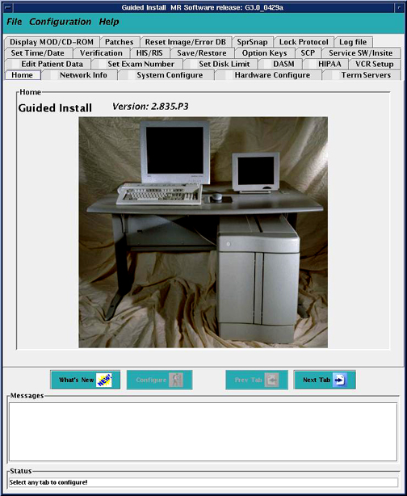

From the Common Service Desktop, select Configuration > Guided Install > FE Mode, and launch the tool. Type operator when asked for the root password. (See Illustration 1.)
Illustration 1: Guided Install Home Screen
